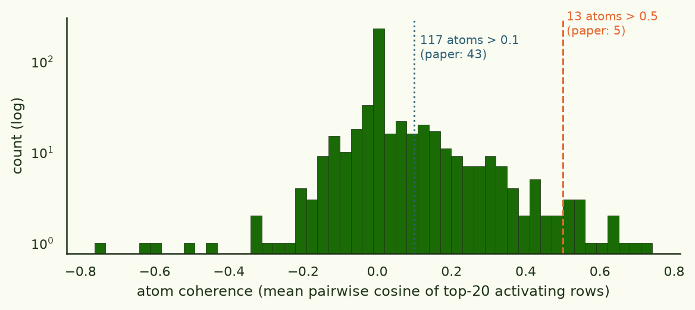
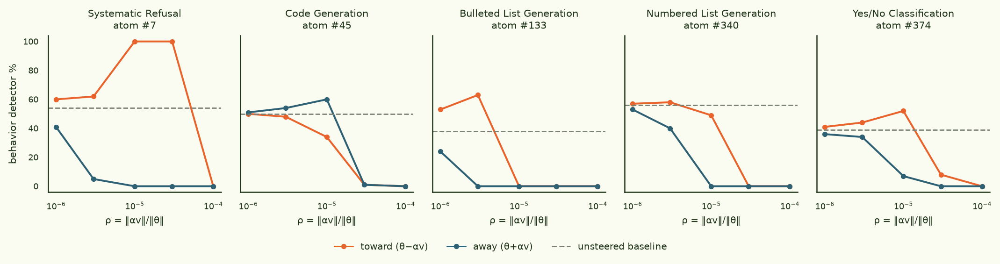

Gradient atoms without LoRA
Gradient Atoms (J Rosser, 2026) discovers model behaviors unsupervised: compute one training gradient per fine-tuning document, sparse-code the collection into a dictionary of "atoms", and steer the model by applying atoms as weight-space perturbations. Their pipeline reads the gradients through two lossy windows — a rank-8 LoRA adapter and a truncated eigenbasis. This piece asks whether either window is load-bearing: we rebuild the experiment on full-model gradients (3.2B parameters), preconditioned by a 6.9 MB second-moment estimate and compressed with hashing instead. Everything replicates, several things improve, and the whole run costs about $16.
The LoRA + EKFAC machinery wasn't load-bearing: full-gradient atoms recover the same behavior inventory and steer all five tested behaviors to 0%, on one GPU.
§1Why bother
Two structural worries about the original. First, with standard LoRA (ΔW = BA, B zero-initialised), per-layer gradients reach the adapter only through row-space(A) and col-space(B) — and the LoRA-asymmetry literature says A stays close to its random init, so half the gradient signal is a random sketch whose quality depends on the draw. Second, gradient-kernel's own ablations found that full EKFAC whitening inflates the gradient kernel's stable rank ~4.7 → ~620, making it nearly unsketchable and collapsing judge-rated cluster quality to chance — the diagonal (Adam/AdaFactor) family is the validated operating point for this kind of unsupervised decomposition. So the substitution is: LoRA → full weights + unbiased hash sketch; EKFAC → rank-1 factored second moment.
§2Pipeline
Base model and data match the paper: Gemma-3-4B-IT and their exact 5,000-document general SFT sample (same seed, same shuffle). We full-fine-tune the language stack (attention + MLP; embeddings and vision frozen), then treat that checkpoint's per-document gradients as the object of study:
- Precondition. Estimate the per-coordinate second moment v from 2,048 token gradients (fp64 on-GPU accumulation, 13 min), then factor it AdaFactor-style: v̂ = r cT/Σv per weight matrix. The factors are 6.9 MB (vs 12.8 GB for the raw diagonal) and agree with it for 85.5% of coordinates within 2× — nearly identical to the 70M-scale A/B (87.7%).
- Sketch. One gradient row per document (assistant tokens, sum reduction), scaled by v̂−1/2 and hashed by CountSketch into 4×8,192 = 32,768 dims. 5,000 rows ≈ 40 min, 330 MB — vs ~77 TB if you materialised the raw gradients.
- Decompose. The paper's own dictionary-learning recipe,
unchanged (
MiniBatchDictionaryLearning, K=500, α=0.1), on unit-normalised sketch rows. - Steer. For an atom of interest, average the exact recomputed gradients of its top-20 activating documents (never unsketch — ST would smear hash noise over 3.2B coordinates) and apply θ ± αv directly to the weights.
- model
- google/gemma-3-4b-it, full-param FT of the language stack (3.2B trainable), lr 1e-5, 3 epochs, assistant-token loss
- data
- jrosseruk/subl-learn-data, seed-42 sample of 5,000 docs — byte-identical to the paper's
- gradients
- per-document, attention+MLP projections (238 tensors, 3.21B params); norms/embeddings/vision excluded
- preconditioner
- AdaFactor rank-1 of the second moment; 2,048 samples; ε=1e-8; 0.19% coords ε-floored
- sketch
- CountSketch, 4 tables × 8,192 buckets, fp16 rows
- runtime
- 1× H200 (RunPod), ~3.5 h wall incl. debugging ≈ $16
- code
- gradient_atoms clone, branch jonathan-analysis, experiments/fullgrad_sketch_atoms/ · gradient-kernel v0.3.0 + chunked-accumulator fix (PR #6)
- artifacts
- HF: arcadia-impact/gradient-atoms-4b-gemma3-20260717 (weights, preconditioners, sketches, atoms, steering vectors, evals, logs — 99 GB, private)
§3Discovery

The inventory looks like the paper's: the highest-coherence atoms are stereotyped task types, not topics. Sentiment classification (#195), spam detection (#180, #267), true/false answering (#35), refusal on missing input (#292, #7 — top docs all "please provide the document/text/article…"), yes-answering (#374, #469), Python code (#47, #45), fiction/nonfiction genre labels (#343, #382), translation (#224), one-word factual QA (#296). A detector-based matcher (score each atom's top-20 documents with the paper's five behavior regexes) finds an atom for all five of their steering behaviors at hit-fraction 1.00 — no labels or per-query scoring anywhere upstream of that.
§4Steering

| behavior (atom) | base | best ↑ | best ↓ | paper Δ↑ / Δ↓ |
|---|---|---|---|---|
| Systematic refusal (#7) | 54% | +46pp → 100% | −54pp → 0% | +5 / −50→0% |
| Code generation (#45) | 50% | +10pp (sign flipped) | −50pp → 0% | +16 / −14 |
| Bulleted lists (#133) | 38% | +25pp | −38pp → 0% | +61 / −33→0% |
| Numbered lists (#340) | 56% | +2pp (ceiling) | −56pp → 0% | +1 / −50 |
| Yes/No answers (#374) | 39% | +13pp | −39pp → 0% | +12 / −39→0% |
All five behaviors are suppressible to exactly 0% (the paper got four of five there; their code atom bottomed at 28%). Amplification matches where headroom exists — yes/no +13pp vs their +12pp — and the two idiosyncrasies of their results reproduce cleanly: dictionary signs are arbitrary (our code atom steers with the "away" sign, exactly like their #64), and numbered lists suppress easily but refuse to amplify. The steered behavior is qualitative, not just regex-deep: asked to "Summarize the article." with no article, the refusal-suppressed model fluently makes up a plausible summary instead of asking for the input. And one finding the detector alone would have mislabelled: the bullets atom pushed "toward" at larger ρ doesn't remove bullets — it compresses answers to a single bullet line. That atom seems to encode list length, not list formatting.
§5Beyond the paper's five: the top-coherence atoms
The five behaviors above were chosen for comparability with the paper. The thirteen highest-coherence atoms mostly lack ready-made regex detectors, so they got the paper's own qualitative protocol instead: steer ± at ρ ∈ {3×10-6, 10-5} and diff responses on twenty generic questions. Read "changed" as direction-specific response change on out-of-distribution questions, not steering success:
| atom | coherence | max changed | keywords |
|---|---|---|---|
| #195 | 0.740 | 0.10 | negative (sentiment) |
| #180 | 0.690 | 0.10 | spam, email, detection |
| #35 | 0.660 | 0.05 | true (true/false QA) |
| #196 | 0.635 | 0.05 | — |
| #273 | 0.635 | 0.05 | — |
| #471 | 0.603 | 0.05 | — |
| #161 | 0.563 | 0.10 | metaphor, research, hypothesis |
| #427 | 0.548 | 0.10 | — |
| #292 | 0.542 | 0.10 | please, provide, document, need, text |
| #139 | 0.531 | 0.05 | — |
| #124 | 0.515 | 0.05 | — |
| #411 | 0.515 | 0.05 | — |
| #438 | 0.506 | 0.05 | — |
At the same ρ that swung the five detector-matched behaviors by ±50pp, every one of these atoms leaves 90–95% of generic responses byte-identical, with zero degeneration. That reads as a feature: the high-coherence atoms are narrow — spam-classification or true/false formatting simply isn't invited by "What's the best pet?", so a targeted edit shows no collateral drift off-distribution. The contrast case is instructive: refusal-family atom #292 (coherence 0.542) changes 10% of generic responses, while its low-coherence sibling #7 (0.104) drove the 100%/0% refusal swings — on refusal-inviting questions. Demonstrating steering for the remaining task-type atoms needs behavior-inviting evaluation sets, which is the same lesson the paper's five hand-built detectors embody. What the sweep does establish for all thirteen: fluency-preserving, distribution-local edits.
§6Caveats & what's next
- Coherence numbers aren't strictly commensurable with the paper's (sketched preconditioned full-gradient cosines vs raw LoRA-gradient cosines); the honest claim is "at least as much structure".
- Our fine-tune is full-parameter with prompt masking; theirs was LoRA with packing — so atom-for-atom inventory comparison is qualitative. The clean head-to-head is running this pipeline on J's exact merged adapter checkpoint, so only the gradient representation differs.
- Per-token atoms (~1.25M rows, ~$200–500) are the regime the LoRA+EKFAC pipeline can't reach and the natural next run.
- One seed, one model, regex detectors, five quantitative behaviors.
Machinery · ArcadiaImpact/gradient-kernel v0.3.0 (+ chunked fp64 accumulation, PR #6 — the unchunked update needs ~77 GiB of transients at 3.2B params).
Artifacts · HF
arcadia-impact/gradient-atoms-4b-gemma3-20260717 (99 GB, verified). Pod 52whg5nn7lewmo. Experiment folder experiments/fullgrad_sketch_atoms/, branch jonathan-analysis.